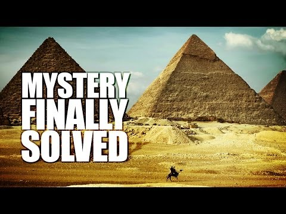

Aliens Built the Pyramids ... Say What?
The Ancient Egyptians had many limitations. Working with copper tools and muscle power, they left monuments over forty stories high. Or did they?
A lack of information on how this feat was accomplished has caused some to conclude aliens were responsible for these marvels of antiquity. Granted, the Ancient Egyptians appear initailly incapable of pyramid building. When this observation is made in an historical investigation, it is often helpful to look at other contemporary civilizations with the capacity to produce an artefact.
This is useful if you want to explain how a necklace made from material only found in the Amazon was uncovered at Cahokia Mounds (it was transported over trade routes) or how steam-engine technology developed in England suddenly appeared in the conquered territories of its empire.
The idea aliens built the Pyramids is not the outgrowth of an acid-trip or the delusion of inferior minds, it is rather the interweaving of a pattern observed in the interactions of human civilizations with concepts from the space age. It requires an inordinate level of faith and dismisses evidence in support of competitive theories. It is pseudoscience, not theory, but it is understandable how this idea emerged.
There are more terestrial explinations. At the most basic level, the pyramids are a hybrid of human culture and inorganic evolution. (include the desert's natural selection of structures: gravity, sand erosion, etc.) (transition to Stellar Evolution)
As On Earth, So In The Heavens
Stellar Evolution...
Chain Letters
Have you ever blocked someone for forwarding every chain e-mail that makes its way to their inbox (or perhaps you are guilty of forwarding a few yourself)... The work of Daniel W. VanArsdale on Chain Letter Evolution traces the lineage of chain letters from "letters from heaven" which circulated in Europe for several centuries. As the cultural environment changed, chain letters adapted, keying into different emotional and social drives. Focus shifted from religious motivations to money, good luck and social advocacy. Letters threatening disaster if they weren't copied had a survival advantage as did letters including the affirmation "It works!". Even more compelling were ambiguous hints of future reward: "see what happens to you on the fourth day". Most notably, VanArsdale investigates how chain letters set up distribution networks and key into basic human drives to gain our compliance. In the process of copying, innovation ("It works!") as well as mutations in transcription (make 8 copies ~ make 88 copies) sometimes give survival advantage to a lineage of letters.
The Light Bulb
Many minds created the lightbulb. They were in various corners of the world and in communication with one another to varying degrees (depending on their collaborative or competitive dispositions &access to communications technologies). Edison didn't come up with the idea of artificial light contained in a glass bulb, nor did he personally perfect the technology. We ascribe the title "inventor" to him due to his PR prowess and an economic ability to secure patents and buy out competitors or hire them on his staff. Edison was a synthesizer. That's a skill which develops in certain individuals due to social and environmental circumstances, not innate gene-based 'intelligence'. The light bulb would have developed even if Edison had played no part.